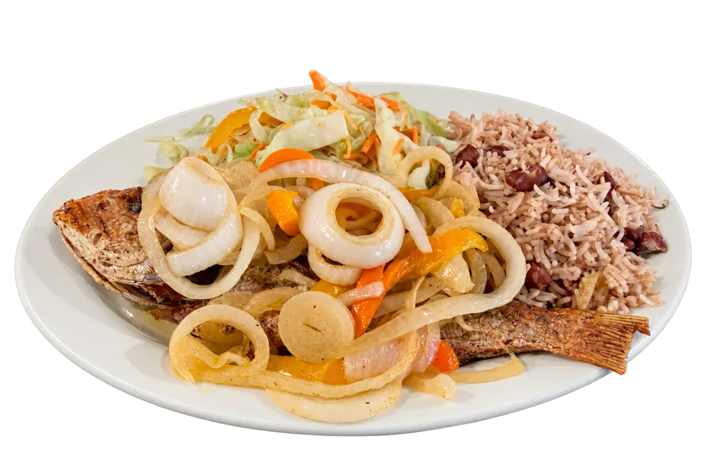
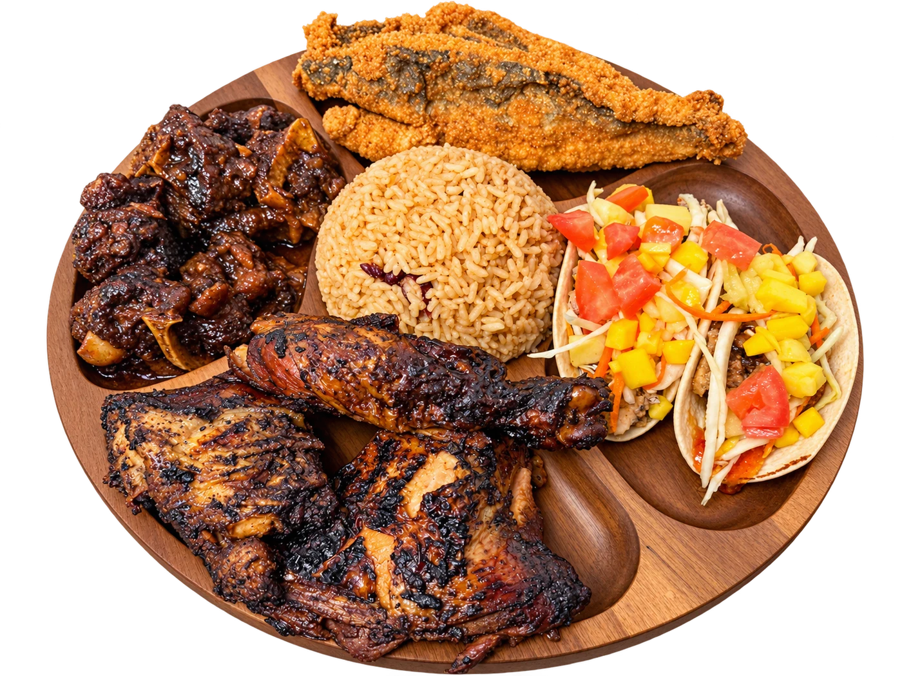

Slow-braised oxtail and tropical slaw in grilled flour tortillas.
Jamaican flavor.
Right here in Manchester.
Whole snapper, oxtail tacos, and jerk chicken.
West Indian food, seafood, and island drinks in Manchester, CT.

Home of the Rum Punch Tower.Bring your people. We’ll pour.Drinks for the table
The kitchen favorites.
Red Snapper
$32Whole red snapper with your choice of rice and steamed cabbage.
Chargrilled chicken, signature jerk sauce, rice, and steamed cabbage.

A little taste
of home.
We’re a family-operated West Indian restaurant in Manchester, Connecticut. Our kitchen brings the flavors of the islands to the table: Scotch bonnet heat, slow-braised oxtail, fresh fish, and rice and peas.
Come for dinner. Stay for a drink. Bring the family back for Sunday brunch.
Book your tableAround our table.
5 / 5 · Google review
“The food is phenomenal. If you’re looking for authentic Caribbean food, this is the place to go.”
5 / 5 · Google review
“We hosted a birthday brunch at Fish N Tingz Bar & Grill, and everything was amazing from start to finish!”
5 / 5 · Google review
“My whole family and I have been coming here from DAY 1! WE feel like family!”
Excerpts from our guests’ Google reviews. Rating shown as of October 2026.

A table. A tower.
Your people.
Reserve a table at Fish n Tingz, or celebrate downstairs at Legacy Events CT—a separate venue business under the same owners. Add catering from Fish n Tingz.
Pull up a chair.
Sunday12 PM – 7 PM
Monday–WednesdayClosed
Thursday4 PM – 11 PM
Friday4 PM – 1 AM
Saturday12 PM – 2 AM
Sunday brunch 12–7 PM · Happy hour Thu 4–9 PM · Fri 4–11 PM
Before you visit
Where is Fish N Tingz?
Find our family-operated West Indian restaurant at 384 Middle Turnpike W, Manchester, CT 06040. See hours and directions or call (860) 730-4440.
What food does Fish N Tingz serve?
Our Jamaican and West Indian menu includes jerk chicken, oxtail, escovitch snapper, seafood, Rasta Pasta and island-inspired drinks. Explore the food and drinks menu for descriptions and prices.
Can I book a table or order catering?
Yes. Request a table online and our team will follow up to confirm. For catering orders serving 40–50 people or more, call (860) 212-3349.